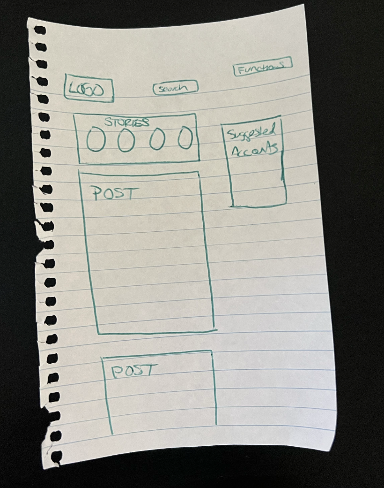
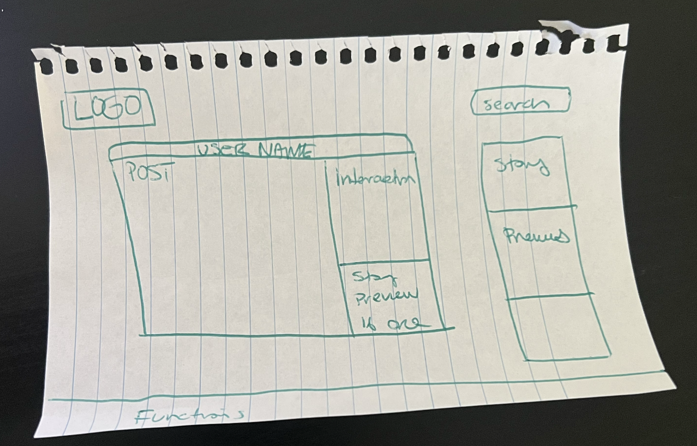

-
Using the favorite website you chose in homework 1, create a wireframe for one page of it using pen/paper, PowerPoint, or any your tool of choice. (use the 'img' tag!) Make sure to let us know what the name of your website is (Use the 'p' tag!)
instagram.com
 -
Try to improve the website you've chosen, and create a redesigned wireframe of one page for the same website using the principles of visual hierarchy that you learned from the article.

-
What is the goal of the website? Who is it intended for? How does the design accomplish this? Write 2-3 sentences answering these questions. (Use the 'p' tag again!)
The goal of the website is to keep your followers and others updated about your day to day activites. It is intended for all people of different ages, which makes it harder to design since the website has to be very inclusive and user friendly. I think it accomplishes this well by making the layout very minimal and easy to understand but isn't optimized for web use.
-
Write 2-3 sentences about what problems your redesign addressed, and how it solved them.
Some of the issues I have is the website looks like a copy and paste of the phone app. I also noticed that one the website there is a lot of white space. Although white space isn't bad there needs to be less of it in order to make capture autidence attention better. I give two different options for the users, one scrolling for each post and a preview of each story.
NOTE: Make sure to include the wireframe images in the website and don't just put it in your assets folder!
Your wireframes should look something like this: